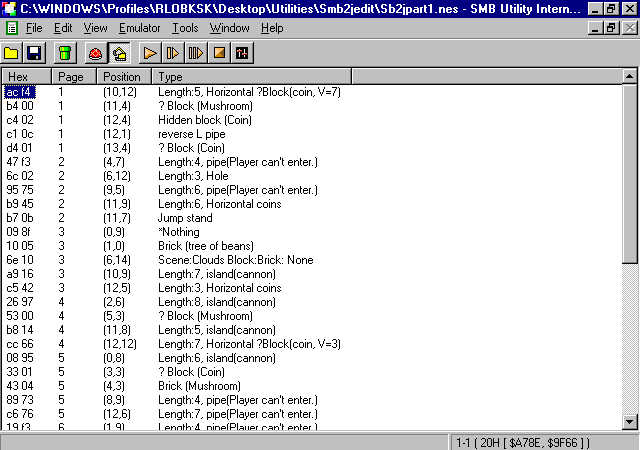
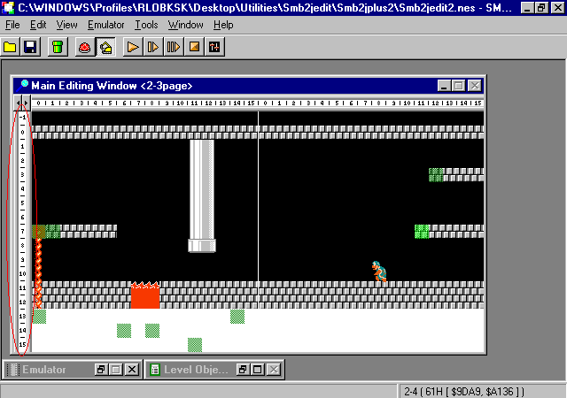

How to Edit SMB2J levels
You need the following
IPS Patch Data for your SMB1 ROM. You should have Super Mario Bros. (JU).nes as a good ROM without bad dumps. Otherwise you have to use SMB Fix from YY.
Smb2jblock1.ips for Worlds 1 through 4. But 4-4 pointer in SMB utility is broken. Thanks for screwing it YY.
Smb2jblock1-2.ips for Worlds 1 through 4. But 4-4 pointer in SMB utility is fixed and most levels are already edited.
Smb2jblock2.ips for Worlds 5 through 8.
Smb2jblock3.ips for World 9.
Smb2jblock4.ips for Worlds A through D.
These patches work for any Emulator including NESTICLE besides FCE Ultra. You know, for people who never had FCE Ultra or Direct X installed for the FCE Ultra Emulators.
Few limitations that DOES not apply the Smb2j.FDS ROM while testing Smb2j custom levels with the SMB Utility Emulator.
In blocks 2 though 4.
In Block 1.
In all blocks
Here’s how to do it.
Standard SMB2J level editing
First off, you design a level as usual in one of the map data hacks. Open up 2 ROMS with your windows hex editor. One with Smb2j.fds and your Smb2jblock?.nes. Be warned objects 0-F in SMB2J changed a little bit than SMB1 has. Then use the Hex Editor to open up the SMB1 map data hacks. Let’s say that you’re editing World 2-3 for instance. Using Smb2jblock1. It’s in offset x8F58 for levels. Open another file that
you’re currently editing – Smb2jmapdata1 with your hex editor. Then type the following as shown here below.

Type in hex numbers AC F4 B4 and search as you see in SMB Utility. You will see the results in your hex editor. Copy the level data INCLUDING THE HEADER all the way to hex FD and paste it in offset x8F58
Notes:
If you use Translhextion for hex searching, it’s best not to search any hex with 00’s, as it won’t show properly for some reason.
Notes:
Test levels with both the SMB Utility emulator and the FCE Ultra or RockNES emulator to see the level progress.
Notes:
While testing levels with FCE Ultra, PLEASE DO NOT reload your save state. As the previous save states before the new save state will most likely to delete your custom levels you made and new levels won’t even load. After the edits, you should close the FCE Ultra Window and choose the SMB2J ROM. DO NOT CHOOSE THE SMB2J ROM without closing the FCE Ultra Window first after the edits. .FDS cartridges are different than .NES cartridges.
The same goes with RockNES but the edits were never deleted. It just won’t load new edits.
Modifying Enemies
Follow the same procedure as above but enemies’ ends with FF.
Advanced SMB2j level editing
This is for professional use only. DO NOT ask me questions about this. :P
If you think that adding objects or enemies is easier, think again. Because it’s not easy as it looks. When you add objects or enemies that exceed the number of bytes in each level, the next level to load will most likely crash. And you know why? Because the level that loads actually come from different level pointers. But if have less objects that exceeds the next pointer, then it won’t crash as much. And of course you MUST always put FD (Objects) and FF (Enemies) at the end of each level. The max number of objects per level is 128. Adding more than 128 objects will have weird effects.
Here’s the explanation of advanced level designing.
Let’s say that World 1-4 will be the target of the level. It starts at offset x8BC2 for objects and the pointer offset for objects is x85B2. Hexes 14 CA. Or in reverse way like all levels will be CA14. When building levels, you most likely like to add objects. So use SMB Utility to right click and "Send" the objects into another room. Most object pointer levels end in CA and then goes to CB when added up.
Just like in Standard SMB2J Hacking, use the 2 hex editors and search for them, then copy and paste.
Now what offset comes after FD. You will know that it’s in hex x8C45 for the next object offset.
Here’s the catch to get the designated pointer for x8C45. Use the Windows calculator and subtract 8C45 from 8BC2 to get the answer 83 (In hex). To add pointers to the designated levels add 83 from CA 14 to get the answer CA 97. Go to hex offset x85B4 and type those numbers 97 CA. You can also do this with less objects also. Just remember to subtract between these 2 object offsets to get the pointer.
It also do the procedures for sprites. Just follow the above as objects.
Notes: It’s best to start from the castle level as its goes all the way to the sea levels.
Notes: You can overwritten the first object castle levels when you add dozens of enemies. Which means you get little space for designing the object levels.
Notes: Windows Calculator is much easier than any other ones. If you do not have one then you should download one. View scientific mode and click on hex to add and subtract hex numbers.
Changing level attributes
For EXPERTs only
It wasn’t easy as it takes but it requires GUTS to do it. Even without the level editor to help you out. First off you need to edit the main pointer. Change one of the levels into another attribute. World A-1 is the target for targeting into a sea level. Compromise the current attribute with your old one (Smb2jblock 4). Make copies before you do anything. In this case you should do first by replacing 20 with 01 in hex xBD8B. Then replace all others by –1 with each overworld level at this point. Or just copy these standard hex pointers from your SMB1 ROM. Next go to xBD9D and xBDCB to change the properties by –1. And finally, change all level pointers into designated areas depending what level you put in.
Notes: Most castle and underground levels were the same level format depending on the map data. You do not need to change any pointers for any procedures.
Notes: Changing level attributes without level editors CAN BE PAIN.
Editing Loop levels
Loop levels are different than SMB1. The coding is much different regardless of World 7 loop. Each block data has it’s own loop data (Except Blocks 3 and 4 which it does not have loop levels.) Loop levels works for all blocks when you tested them with your .fds ROM. And of course, you need the "loop command" object to set.
World 5 levels and including World A through D levels are set to 1 loop for some reason. Can’t really explain how it works. World 9 and acts if they were Worlds 1 through 4.
Loop edits for the SMB2J ROM.
Edit Castle looping (Level)
19957=0x4DF5
Original Offsets 02 02 02 02 05 05 05 05 06 07 07 04
Changes the level of a loop command. The level chosen is in hex.
Example: World 1 is 00, World 6 is 05, World 8 is 07
Edit Castle looping (Page Frame)
19969=0x4E01
Original Offsets 03 05 08 09 03 06 07 0A 05 05 0B 05
Changes the Page level of a loop command. Whenever there’s a loop command in a page is the one chosen to work.
Example: Page 02 in Hex is 03 in decimal. Convert the hex pages in decimal whenever you set the loop. Most times that Page 01 must be set in hex 03 for any loop levels.
Edit Castle looping (Vertical Position)
19981=0x4E0D
Original Offsets B0 B0 40 30 B0 30 B0 B0 F0 F0 B0 F0
Changes the Vertical position of a loop command. Must stay in that position. World 8-4 is an example of the loop where the long fire-bar is in hex B0. SMB Utility has numbers for vertical positions but you +1 to it and converts these decimal numbers to hex. It’s best to set the second digit at 0 or you’ll end up trapped.
Here’s the vertical position marked in a red circle SMB Utility

Offset of page map skip data
34102=0x8536
Original Offsets 0C 0C 42 42 10 10 30 30 06 0C 54 06
Changes the offset for the looping. Counting 2 bytes of each object in a level. It’s best to put the Page Skip object so you will keep track of objects.
Example: 0E in World 6-4’s loop is Page Skip 02 Object, then 10 is the used block object, and the next is 12 for the horizontal block.
Notes: World A through D levels cannot be edited by offset of page map skip data x8536. It is located in one of the enemy/object pointer positions. Let’s say it’s in offset xBDBB. Those kind of data is BARELY impossible to prevent this unless is by ASM. If you’re an ASM hacker, then you can separate BOTH the enemy/object pointer data and create the loop-offset data of Worlds A through D. There’s a free amount of space for this.
Notes: If you’re making loop levels in Worlds A through D, the castle level looping is in hexes 00, 01, 02 and 03 instead of 09, 0A, 0B, and 0C.
How about making those map data levels into Super Mario Bros. The lost levels
If you’re expecting to make those levels into your SNES game, it’s completely different than the original. For example, the F Objects in the game were 3 bytes instead of two and the level pointers are completely different. Changing attributes can be changed but you can’t actually change the backgrounds, music and palettes. You have to changed them yourself.
However, if you’re not an elitist ROM-Hacker, then you can’t really hack the game without actually knowing it. SMBTLL Hacking is MUCH harder than SMB2J.
That’s all I taught you, for now. This is much better than my previous SMB1 ASMS Patch but better and neater.
Anyone has something-different contact me via e-mail address or come to my message board at http://insectduel.proboards82.com to ask anything in particular. My email address is insectduel@yahoo.com NEVER contact me with my Gmail account UNLESS you have something important to ask me. Because I can delete spammers, advertisers, and useless questions that aren’t related to ROM-Hacking and such important questions. However, my Gmail account is being blocked so there’s a 100% chance that you can NEVER reached me at all.
Also, DO NOT haunt me in any board just to PM ME. I’m not always active.
Copyright 2007 Insectduel. This document and these patches may be distributed under these conditions.
(1) You MUST include this document along with the zipped copy of these 5 patches. :P Otherwise you won’t know how to hack SMB2J.
(2) When you upload the patch to your site, you MUST upload it as a .zip file!
**(That was pretty clear in rule #1, but I just wanted to make it a separate rule.)**
(3) You must NEVER edit this document IN ANY WAY!
(4) This patch may not be distributed as a pre-patched ROM, or included with a ROM collection of any sort. THIS IS A TOOL’s PATCH for SMB2J hacking purposes only.
(5) NEVER give me credit for these patches. These were actually modified from these original patches but a few coding has been changed to make these patches work on ANY emulator.
Failure to follow these rules and this tool will be deleted. PERMANENTLY. You know what I mean. If you want to hack SMB2J then you should follow these rules under my order.
Insectduel is NOT sponsored, endorsed, or approved by Nintendo.
Finally, I am in no way responsible for any problems this file may cause your system, so if your computer blows up, gets a virus, laughs at you, calls you names, etc., don't blame me. Thank you, and have a nice day. :D